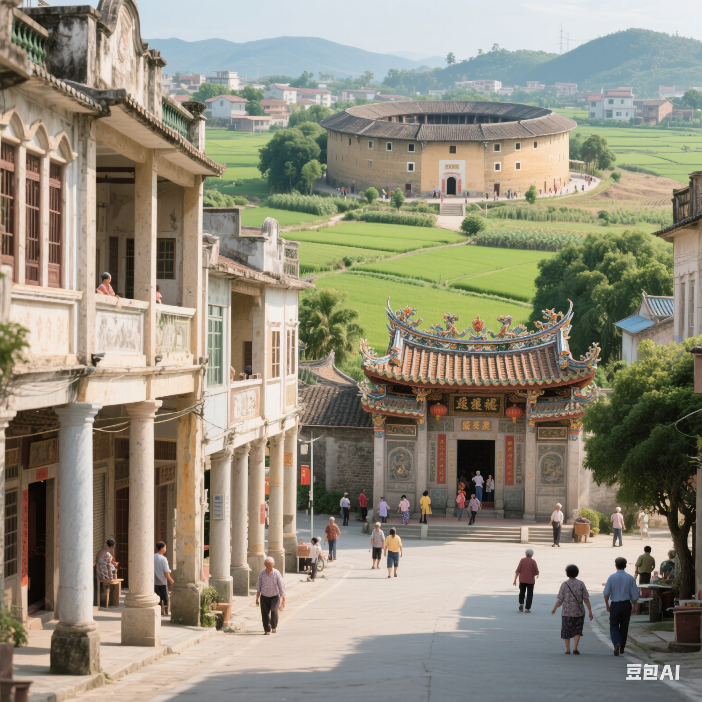
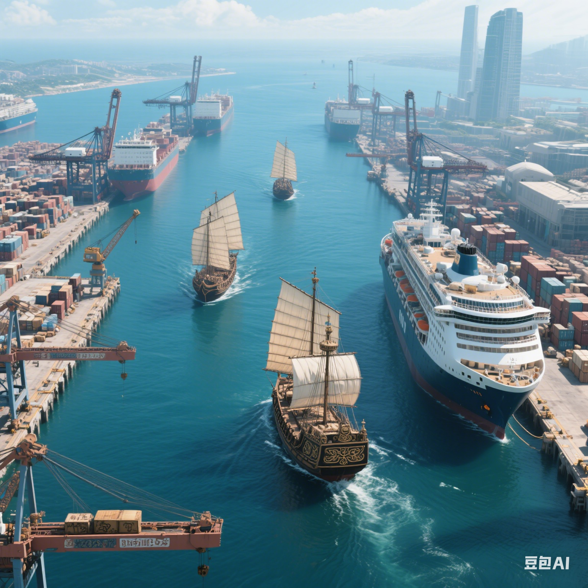
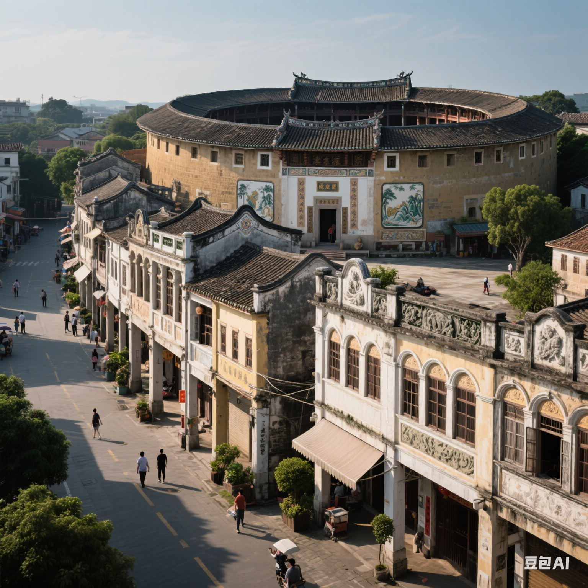
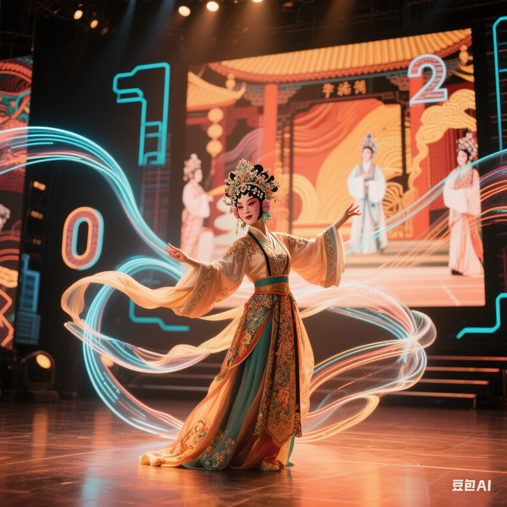

🌟 广东文化的核心特征

🌐 多元性：跨越时空的文化交融
广东文化是“多源一体”的融合体系：
- **百越根脉**：新石器时代的西樵山石器、石峡文化炭化稻，奠定了岭南本土文化基础；
- **中原注入**：秦代赵佗“和辑百越”、两晋“衣冠南渡”、宋室南迁，带来农耕技术、儒家伦理与官话体系；
- **海外碰撞**：唐代广州“蕃坊”聚居10万胡商、清代十三行垄断外贸、近代留洋潮，引入阿拉伯、东南亚及欧美文化元素（如骑楼的南洋拱券、广绣的西洋配色）。

🌊 海洋性：向海而生的开放基因
4114公里海岸线塑造了广东“通江达海”的文化性格：
- **历史脉络**：汉代徐闻港是海上丝绸之路起点，唐宋广州“市舶司”税收占全国1/5，明代郑和下西洋从广州补充给养；
- **精神传承**：从“敢为天下先”的十三行行商，到近代容闳率幼童留美、孙中山领导辛亥革命，再到改革开放“特区精神”，海洋文明的开拓性贯穿始终；
- **当代延伸**：粤港澳大湾区建设中，“湾区文化”正以国际视野融合创新（如深圳文博会、广州国际艺术博览会）。

🏘️ 地域性：三大民系的“和而不同”
地理分隔与历史迁徙催生了特色鲜明的三大民系文化：
- **广府文化**（以广州为中心）：重商务实，代表有粤剧、广府菜、骑楼建筑；
- **潮汕文化**（以汕头为中心）：保留中原古俗，代表有潮剧、功夫茶、嵌瓷工艺；
- **客家文化**（以梅州为中心）：宗族聚居，代表有围龙屋、客家山歌、盐焗鸡。
三者虽语言、习俗各异，却共同认同“岭南人”身份，形成“各美其美，美美与共”的文化生态。

🔮 现代性：传统与创新的活力碰撞
广东文化从未停止进化，在当代展现出强大生命力：
- **非遗活化**：粤剧推出“Z世代”短视频版，广绣与LV、爱马仕合作推出现代服饰；
- **数字赋能**：潮汕英歌舞通过直播走向全球，南越王墓文物通过VR技术“活”在手机里；
- **文化输出**：深圳“设计之都”、广州“国际美食节”、东莞“潮玩产业”，让岭南文化成为“国潮”核心IP。